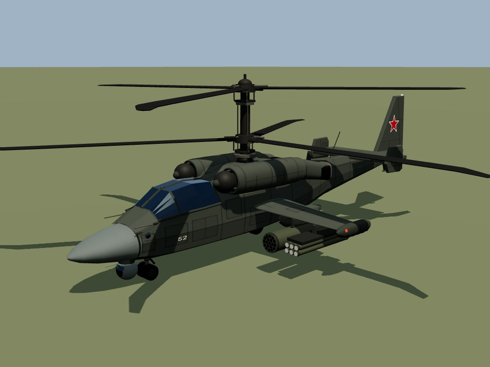
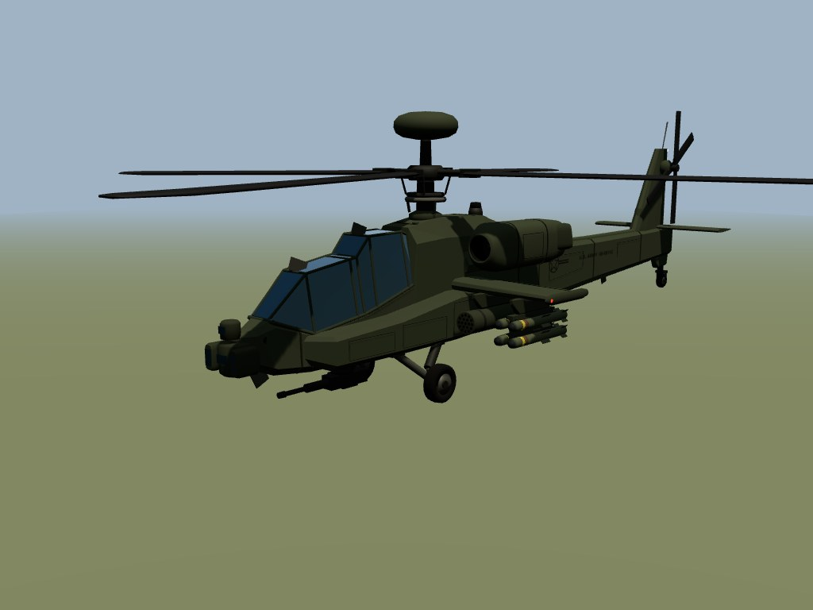
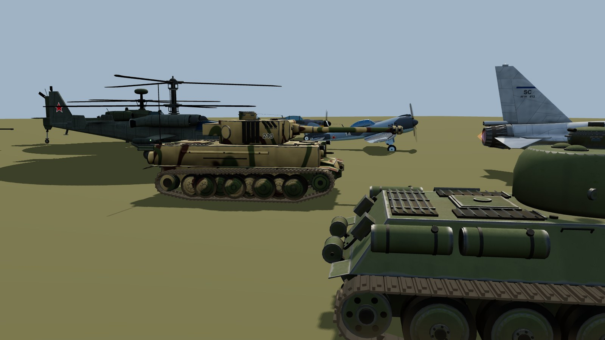
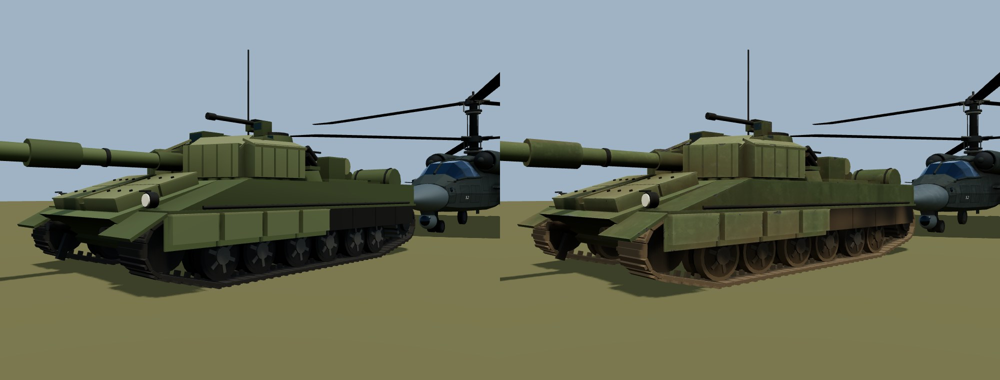
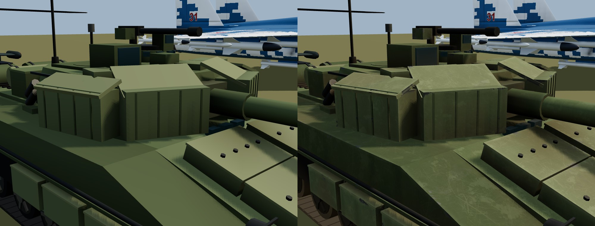
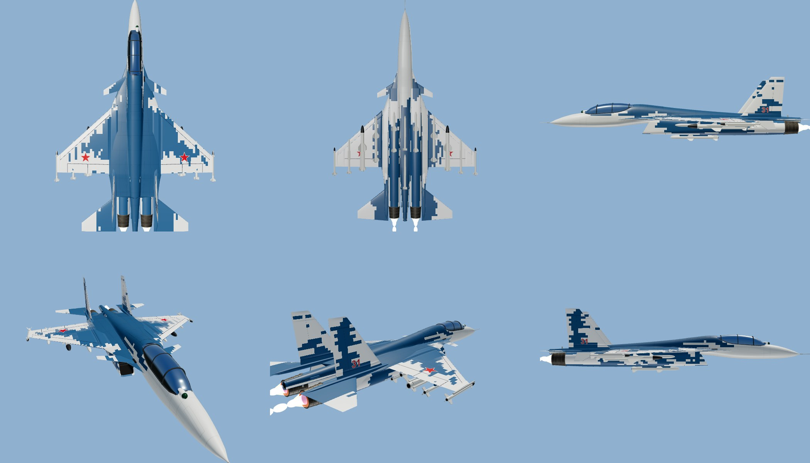
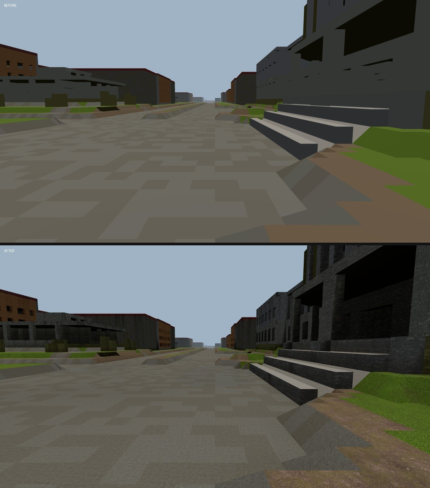
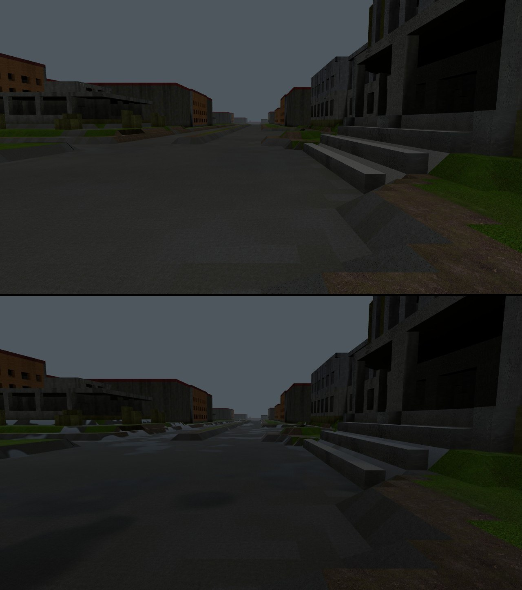

Три недели без девлога и больше двухсот коммитов. В боях появились вертолёты, небо пересобрано почти целиком, авианосцы начали отстреливаться, а море теперь поднимается и заканчивает раунд. Вышли два новых режима, техника и карты выглядят иначе. А на сайте появился быстрый экспериментальный путь распознавания КВ, и скриншоты для нашей нейросети Noos теперь можно присылать прямо здесь.
08.11.2026после #08 от 16.10~7 минутвертолёты — ранний доступ
01 вертолёты ранний доступ
Ка-52 у красных, AH-64 у синих
Новый класс техники. Вертолёт выбирается в лобби или клавишей T, взлетает со своей площадки на палубе авианосца. В конвое его нет. Метка «ранний доступ» честная: баланс будем крутить по вашим боям.


Обе модели собраны заново, по проекциям настоящих машин.
8
ПТУР по лучу прицела, работают и по воздушным целям
10
залпов НАР, ромб на экране показывает, куда лягут
2
тепловые ракеты «воздух — воздух» на законцовках крыла
Оптика с автосопровождением
В оптике (V) жмёте X: прицел цепляется за технику или точку на земле и ведёт её сам, с поправкой на ваш полёт и крен. Мышь только подправляет. Цель зашла за дом или вышла из сектора — захват сорвётся, и вы об этом узнаете. ПТУР идёт по линии прицела: держите цель, и ракета придёт, даже если вы в этот момент разворачиваетесь на 400 км/ч.
Shift / Ctrl
шаг винта: вверх и вниз
1 / 2 / 3
ПТУР / НАР / ракеты «воздух — воздух»
V, затем X
оптика и автосопровождение, X ещё раз — сброс
F · X
ловушки и диполи (X — вне оптики)
как его сбивают
Прозевали пуск — скорее всего, всё. Заметили — отворот, ловушки против тепловых, диполи против радарных. Станция помех иногда срывает тепловую сама, лампа на корпусе при этом вспыхивает. А совсем у земли и воды радарным ракетам работать тяжело: ниже 30 метров они начинают промахиваться.
02 воздух переделано
Самолёты теперь воюют по-другому
Раньше воздушный бой сводился к одной кнопке и одному виду ракет. Теперь у пилота есть выбор, а у цели есть шанс.
1,55 М
на форсаже: примерно 1900 км/ч, с конусом пара и хлопком
2 + 4 + 2
тепловые, радарные и «воздух — земля», клавиши 1, 2, 3
24 + 16
ловушек и диполей, теперь раздельно
Тепловые сбиваются ловушками и не видят сквозь облака. Радарные на ловушки не реагируют, против них нужны диполи. Пока ракета далеко, её ведёт ваш радар: потеряли цель из конуса — ракета ушла.
Радар и предупреждение об облучении. Над миникартой — индикатор обзора с отметками. Пилот видит, откуда его облучают и кто пустил.
Захват взглядом. C или Alt — обзор, и головка смотрит туда же, до 80° от носа. Можно пустить ракету вбок.
Облака раскладываются по погоде. За облаком от тепловой можно спрятаться.
От ракеты можно уйти. Она поворачивает с инерцией и теряет скорость в манёвре: резкий отворот примерно за секунду до встречи часто спасает, за полсекунды — уже поздно.
Неконтактный подрыв. Прямое попадание — насмерть, рядом — останетесь на одно попадание пушки, дальше урон спадает.
На экране то же, что на сервере. Ракета больше не пролетает цель насквозь: взрыв там и тогда, где она реально подорвалась.
ЗУР у ЗСУ больше не «выстрелил и забыл»: ракету ведёт ствол, увели его с цели — ракета ушла. На экране так и написано.
Шасси ваши, садиться можно где угодно
Автоматика шасси больше не лезет: только клавиша G. На шасси можно сесть на палубу, дорогу, поле, крышу — если хватит ровного места и не падать слишком быстро — и взлететь снова. Убрали шасси и сели на брюхо — самолёт цел, но взлететь уже не получится: лётчик выходит через 5 секунд, без взрыва и без очков врагу. Только на своей палубе брюхо чинят.
03 авианосцы и вода новое
К чужому кораблю лучше не лезть
Авианосцы построены заново, корпус больше не дырявый. И главное — они защищаются.
ЗАК бьёт по чужим самолётам и вертолётам у корабля. Сначала кладёт очереди рядом, но с каждой целью в зоне зона «напрягается», и через некоторое время огонь становится точным. Опустела зона — через 30 секунд всё успокаивается.
Зенитные ракеты стартуют с кормовых пусковых и работают далеко назад и вверх. В сторону карты зона короткая, так что над полем боя корабль вам не мешает.
Палуба ожила. Спавн по свободным местам, стоянки под углом, союзника на взлёте больше не тараните. Перезарядка заодно чинит машину. Самолёт на брюхе поднимает кран.
Море поднимается
По ходу раунда вода растёт. Корабли всплывают вместе с ней, а когда море доходит до игровой зоны, раунд заканчивается. В конвое это победа защиты. Чем ближе конец, тем заметнее: поднявшийся авианосец оказывается в прямой видимости у зениток с берега.
Ракета, задевшая воду, теперь взрывается на ней, а не плывёт дальше. Торпед не обещаем.
04 режимы открыто
«Штурм рейхстага»
Вторая мировая на Малой Бердовке. Красные на Т-34-85 и Ла-5ФН наступают, синие на «Тигре» и Bf 109 G-6 обороняют площадь перед большим бело-серым зданием в центре карты. Точка одна, и в начале матча она у синих. Красным нужно продержать её 180 секунд, синим хватает дотянуть до конца матча.

«Тигр» и корма Т-34-85 уже в новых материалах.
Танки разные. «Тигр» пробивает Т-34 в лоб, а Т-34 берёт его в лоб только почти по нормали. Зато он ощутимо быстрее и может обойти с борта.
Самолёты винтовые. Без форсажа, ракет и радара: пушки и две бомбы на вылет. Стартуют сразу в воздухе.
Своя лётная модель. Тянет на малой и слабеет к максимальной скорости, за критическим углом клюёт на крыло, на пикировании рули дубеют.
Моря нет. Вместо него земля, авианосцы и вода в этом режиме не участвуют.
«Удар»
У всех только «Искандеры», две команды, бой на время с возрождением. Ракета одна, и первым пуском накрыть цель получается редко: разброс большой, нужна поправка. Посмотреть, куда легло, можно с дрона-разведчика.
G
развернуть или свернуть пусковую, только стоя
B
карта наведения: сетка квадратов, ЛКМ — точка
Пробел
пуск; новая ракета — через 15 секунд в походном положении
3
дрон-разведчик: смотреть и отмечать врагов
Маркеров над врагами нет. На карте видны только те, кого отметил дрон или кто сам пустил ракету. За 6 секунд до разрыва тем, кто под ракетой, приходит «ПРИЛЁТ!» и сирена.
05 техника и карты
Машины перестали быть игрушечными
БМП-2, Bradley, «Тунгуска» и ADATS получили детальные модели, Ка-52 и AH-64 собраны с нуля. Экипаж и модули внутри расставлены заново по геометрии каждой машины, так что куда попал — теперь ещё точнее то, что получил.

Т-80: слева как было, справа со всеми изменениями.

Вблизи: сколы, царапины и потёртые рёбра.
Материалы по классам. Краска матовая, металл похож на металл, резина — на резину. Фактура из сканов настоящих поверхностей.
Износ. Разводы, потёки, грязь снизу и в щелях, пыль, потёртые рёбра у наземной техники.
Отражения по погоде. Машина отражает то небо, под которым едет. Щели и стыки затенены, поэтому форма читается даже в пасмурный день.

Су-30 в новом камуфляже: рисунок клетками, рули несут его вместе с собой.
Карты подтянулись следом
Лёгкие карты боёв получили затенение, сглаженный цвет, фактуры, грязь и потёки на стенах.

Та же улица: сверху до, снизу после.
Три новые галочки в настройках графики, выключаются отдельно:
Тени по всей карте. Дома наконец отбрасывают тень туда, куда положено.
Мокрые улицы в дождь: лужи и отражение неба.
Следы. Колея за гусеницами и копоть от разрывов остаются на карте. На встроенных видеокартах по умолчанию выключено.

Гроза: сверху галочка выключена, снизу включена.
Кузня — новая карта, открыта всем: крепость с воротами и лес, который можно снести. Для слабых видеокарт есть настройка «Детализация карты».
06 удобство и фиксы
Клавиши наконец ваши
Любую клавишу можно переназначить: в лобби на вкладке «Управление» или прямо в бою, щелчком по плашке. Подсказки на экране показывают уже ваши кнопки. Само лобби разложено по вкладкам вместо одной длинной ленты, в Firefox сайт перестал жарить процессор. Плюс новые звуки: вертолёты, ЗАК, шасси, посадка на брюхо.
Что починили и подкрутили
Прицел танка. Кольцо ствола и кружок расходились, теперь считаются от настоящей оси орудия с учётом падения снаряда. Ствол у препятствия поднимается только когда упёрлось дуло, и плавно.
Самолёт. Мышь ведёт нос, пушки сходятся с кружком. После обрыва связи самолёт больше не перестаёт слушаться. Отрыв от полосы не зависит от FPS. Хвост не проваливается под палубу.
Баланс. Ракеты и ПТУР бьют в 2,2 раза сильнее, ОФС — в 1,6. Пушка самолёта стреляет вдвое чаще и сильнее бьёт по самолётам. Ракеты «воздух — земля» стали медленнее, 30 мм их сбивают.
Су-30 пускает ровно то, что висит на подвеске.
Сеть. Выстрел и звук сразу по нажатию. Пинг не залипает. После Alt+Tab не проигрывается всё накопленное разом.
«Искандер» ставит дым и таранит баррикады своим габаритом, а не танковым. Попадания по кабине считаются до самого лобового стекла.
Новый раунд. Вода опускается до расстановки, техника больше не падает с палубы.
Тепловизор в оптике самолёта теперь запоминается.
07 noos можно помочь
Покажите Noos игру
Noos — наша нейросеть. Сейчас она определяет, что за экран перед ней, находит ячейки инвентаря и разбирает сводку КВ. Чтобы расти дальше, ей нужны настоящие кадры, и теперь их можно присылать прямо на сайте: scwa.ru/noos.
Киньте скриншот на страницуФайлом, перетаскиванием или Ctrl+V. Подойдёт любой кадр из игры и даже фото экрана с телефона. Нужен вход и привязанный персонаж.
Сети размечают кадр заранееОбычно за пару секунд: какой это экран, где клетки инвентаря, где области сводки КВ.
Вы поправляетеДвигаете рамки, меняете тип экрана. Можно обвести что угодно — ник, предмет, число, кнопку — и подписать, что это.
Кадр уходит в обучениеМы проверяем разметку. Если что-то не так, вы увидите причину и сможете поправить.
Цель, а не готовая функция: мы хотим, чтобы Noos понимала кадр целиком — оружие, прицел, артефакт в аномалии, локацию по миникарте. До этого далеко, и без ваших скриншотов не дойти.
Распознавание КВ: экспериментальный путь
На странице загрузки появился переключатель «Экспериментальное распознавание». Сводку КВ тогда читает Noos: в среднем кадр разбирается примерно в шесть раз быстрее, чем обычным путём, и никнеймы она понимает намного лучше.
Читает только главное: игроков и очки команд.
Если не справится, кадр сам уйдёт обычным путём.
Путь экспериментальный. Ошибается не так, как обычный, а очки второй команды иногда не дочитывает, тогда их вписываете вы. Таблицу в любом случае проверяете сами.
Проверять теперь проще и на обычном пути: экран подсвечивает всё подозрительное.
Цифры, в которых сеть не уверена.
Пустые ячейки.
Счёт больше, чем у строки выше: игра сортирует таблицу по счёту, так что это почти всегда неверная цифра.
Ники: пустые, повторяющиеся и те, кого нет в составе клана.
безопасность
Работа, которую не видно
С конца октября заметная часть времени ушла на безопасность: прошлись по сайту, нашли и устранили много проблем. Подробности намеренно не публикуем. Нашли что-то сами — напишите в поддержку.
поддержать проект
SCWA бесплатный
Всё из этого выпуска доступно всем кланам без подписок. Но у сервиса есть реальные расходы, и если он помогает вашему клану, вы можете поддержать разработку.
Сайт и ботРаботают круглосуточно, а история вашего клана хранится без срока.